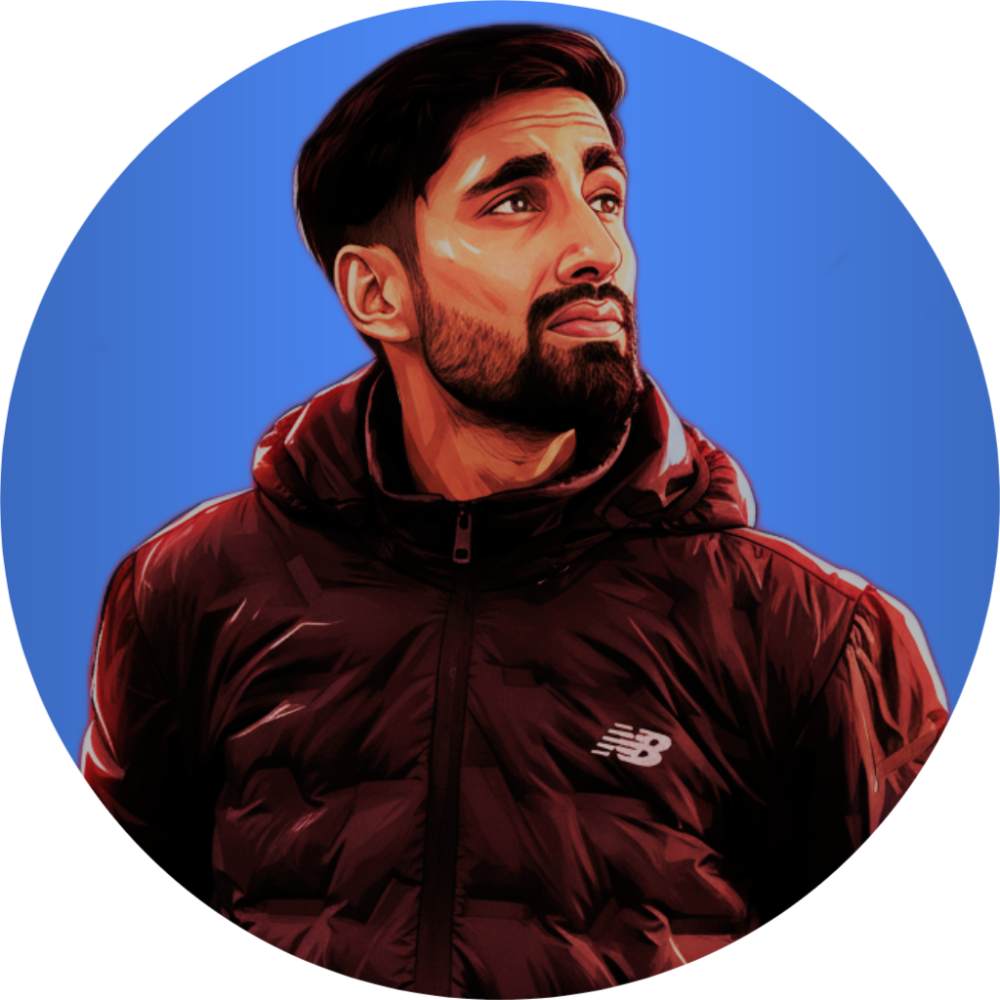

Civil Engineer | Researcher | Educator
📞 +977-9829941246 | ✉ nirojaryal555@gmail.com
📍 Thakre-02, Dhading, Nepal
A self-motivated and passionate individual pursuing advanced studies in Structural Engineering. Currently a researcher and Sub-Instructor, focused on sustainable construction materials and earthquake-resistant structures. Experienced in research writing and presentations.
Sustainable building materials, supplementary cementitious materials such as bamboo waste, rice husk, and water hyacinth. Focus on strength, durability, and environmental sustainability in construction systems.
Velox Lab, Kathmandu (Sept–Nov 2023)
Janajagriti Secondary School (2024–Present)
Civil Soft Training (AutoCAD, ETABS, Revit)